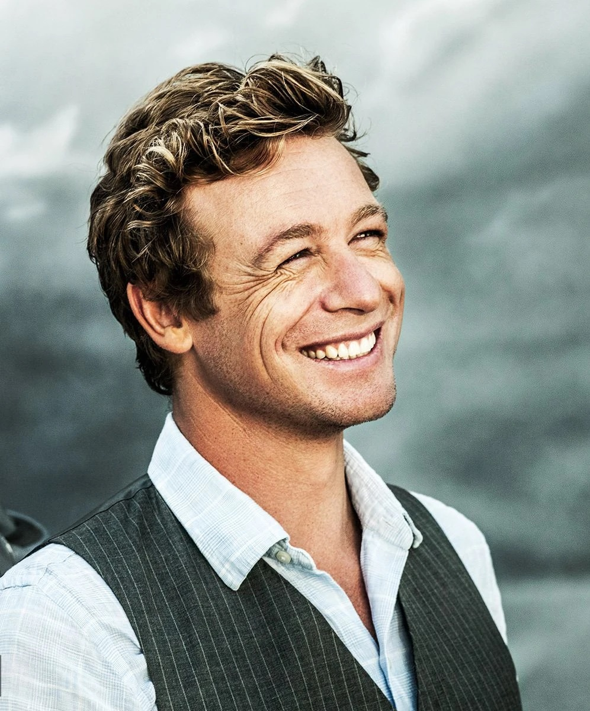
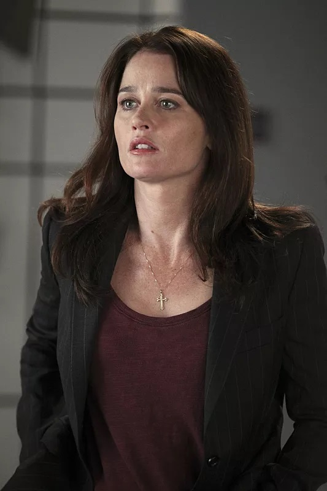
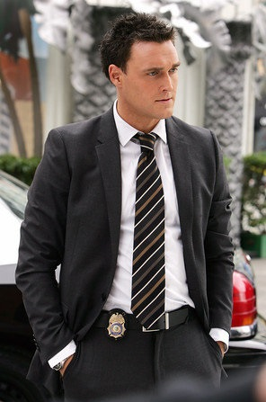
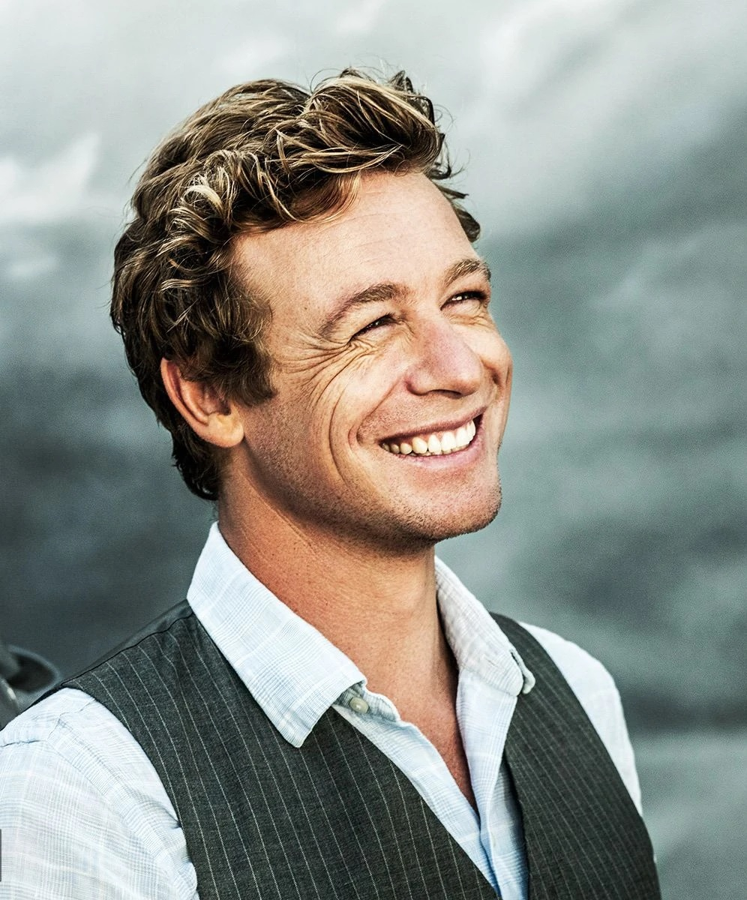
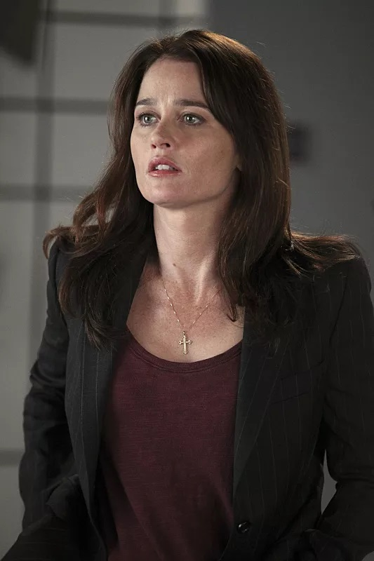
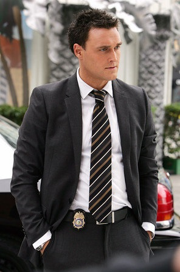

Patrick Jane
Teresa Lisbon
Kimball Cho

Wayne Rigsby
Patrick Jane
Teresa Lisbon
Kimball Cho
Wayne Rigsby

Es un miembro del BIC a cargo de Lisbon. Es de los mejores en cuanto a interrogatorios por a su carácter impasible y pragmático. Está serio casi todo el tiempo (aunque no por ello carece de sentido del humor) y dice las cosas sin rodeos, le molesta la estupidez y solo se le ha visto sonreír en la serie dos o tres veces. Estuvo en el ejército y en un reformatorio de adolescentes, puesto que pertenecía a una pandilla juvenil llamada Avon Park Playboys. A menudo se le ve leyendo un libro. Es el segundo al mando cuando Lisbon no está. Muchas veces es cómplice de Jane en sus planes para atrapar al asesino, en comparación a Rigsby quien tiende más a seguir las reglas. En la cuarta temporada, tiene un romance con su informante, llamada Summer. Se vuelve buen amigo de Rigsby, siendo muchas veces su confidente respecto a la relación con Van Pelt. Luego de la desaparición del BIC ingresa como agente del FBI, trabajando con sus antiguos compañeros Jane y Lisbon. En la séptima temporada, se vuelve mentor de la joven agente Michelle Vega y tras la partida de Abbott, se vuelve el jefe del equipo.